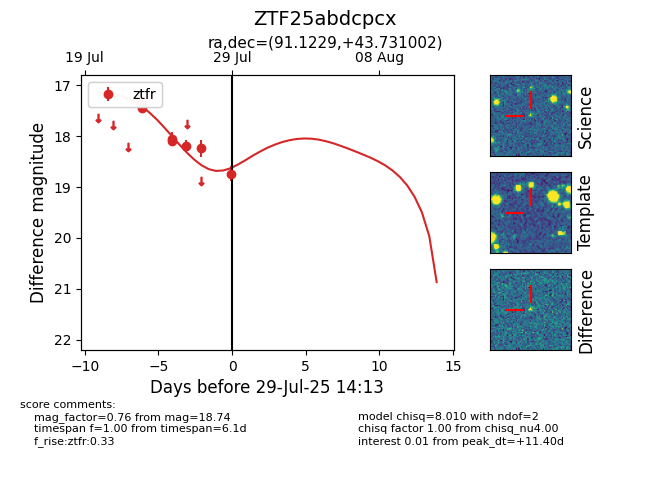

Target ZTF25abdcpcx at 2025-07-29 14:13, see:
FINK: fink-portal.org/ZTF25abdcpcx
Lasair: lasair-ztf.lsst.ac.uk/objects/ZTF25abdcpcx
ALeRCE: alerce.online/object/ZTF25abdcpcx
alt names
ZTF25abdcpcx (ztf,fink)
coordinates:
equatorial (ra, dec) = (91.1229,+43.73100)
galactic (l, b) = (168.9723,+10.62588)
photometry
last ztfr=18.74
7 ztfr detections
